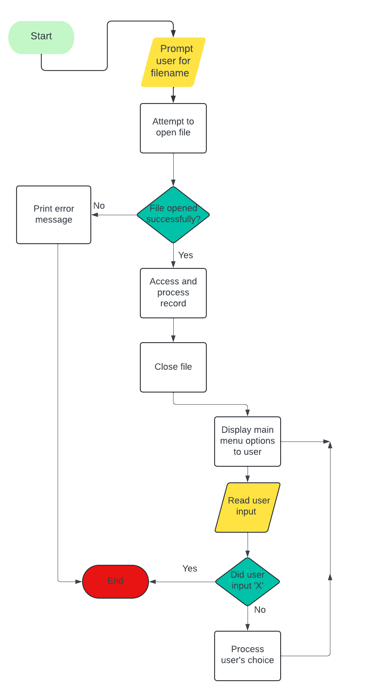
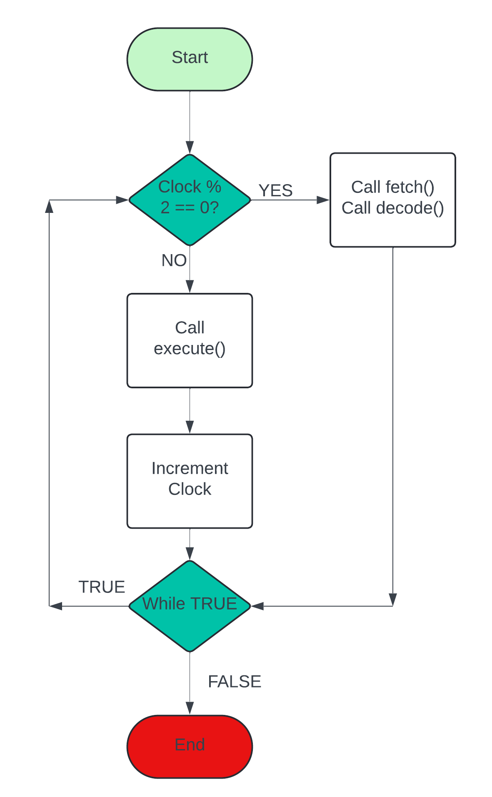
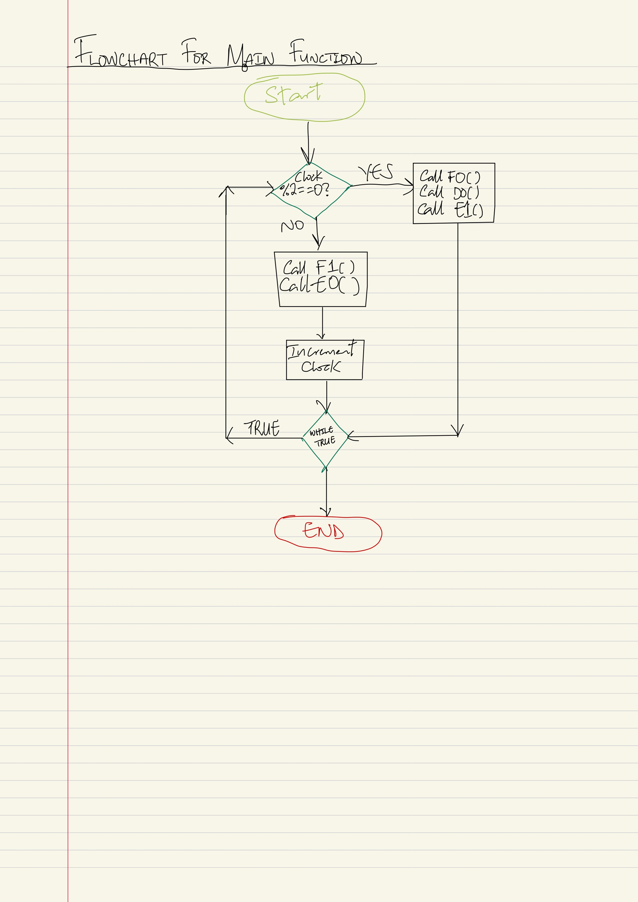
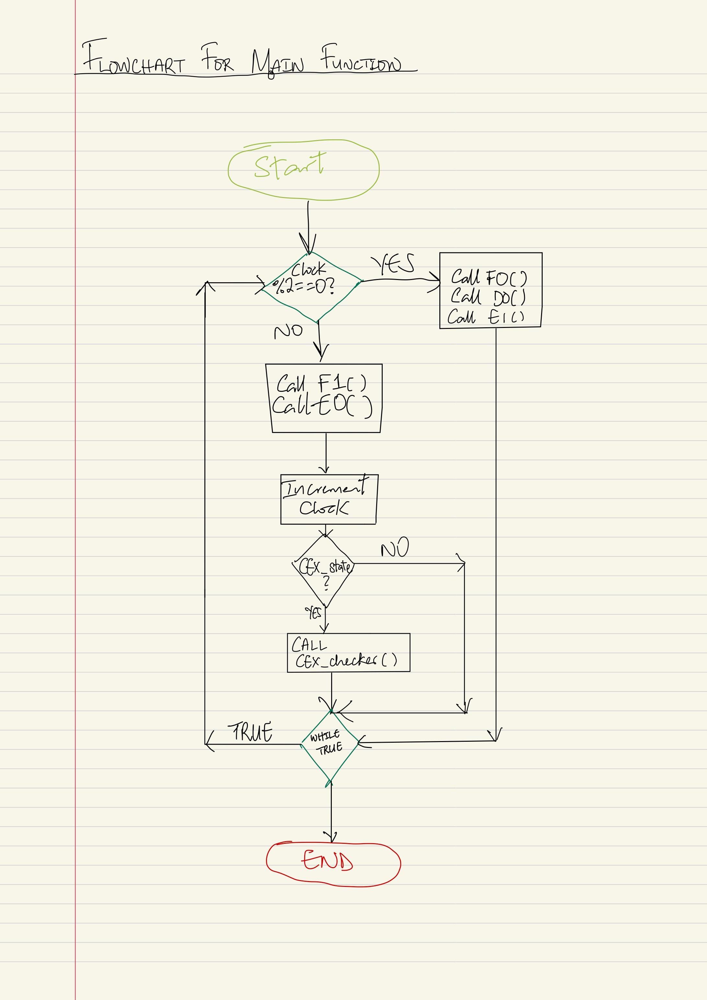

CPU Emulator
Overview
The XM23p is an extension of the original XM series processor, designed with a pipelined, Harvard architecture that separates instruction and data memory. This project involved the design, implementation, and testing of an emulator for the XM23p, incorporating features such as memory loading, pipeline execution, register operations, data memory access, control transfer, and conditional execution. Each feature was implemented progressively over five assignments, showcasing my understanding of CPU architecture, low-level programming, and system testing.
This emulator was implemented using the following 16-bit Instruction Set Architecture:
XM23p Instruction Set Architecture
From Concept to Code
Assignment 1: XM23p Loader and Memories
The first task was to implement a standalone loader to initialize and manage the two separate memories of the XM23p: a 64 KiB instruction memory (IMEM) and a 64 KiB data memory (DMEM). This loader reads S-Records generated by the assembler from XM23 assembly programs and loads instructions into the IMEM and data into the DMEM.
Key aspects of this assignment:
- Memory Registers: The loader used the Instruction Memory Address Register (IMAR), Instruction Control Register (ICTRL), and Instruction Memory Buffer Register (IMBR) for IMEM management, and their counterparts (DMAR, DCTRL, DMBR) for DMEM.
- Loading and Displaying Memory: After loading the instructions and data, the program was able to display the contents of memory in both hexadecimal and ASCII formats, ensuring correctness during testing.
The following are designs which aided my implementation of the software:
Data dictionary for S-Record
S-Record Design Flowchart
This assignment laid the groundwork for memory management, a critical component of the XM23p emulator.
Assignment 2: Implementing the Pipeline and Register Operations
Next, the pipeline architecture of the XM23p was introduced, and I implemented a basic 3-stage pipeline (Fetch, Decode, Execute) for handling register-to-register operations. The pipelining reduced the cycle time for non-memory instructions, improving performance from four to two clock cycles per instruction.
Key implementation details:
- Pipeline Stages: The Fetch stage was split into two sub-stages, while Decode and Execute were straightforward. Instructions such as ADD, SUB, AND, OR, and XOR were supported.
- Register File: The emulator implemented a register file with a flexible, orthogonal instruction set that operated on any register, including special registers like the Program Counter (PC).
The following are designs which aided my implementation of the software:
Data dictionary for Pipeline
Pipeline Design Flowchart
This phase significantly optimized instruction throughput, providing a foundation for future enhancements such as memory access and branching.
Assignment 3: Data Memory Access
In this phase, I extended the emulator to handle load and store instructions (LD, LDR, ST, STR) that access the data memory (DMEM). XM23p’s load-store architecture required careful management of the memory access pipeline.
Key features include:
- Two-step Memory Access: The execute stage was divided into two sub-stages (E0 and E1) to allow for address calculation and memory access. Memory addresses were handled with pre- and post-increment/decrement modes for both word and byte accesses.
- Addressing Modes: The emulator supported both direct and indexed addressing, allowing efficient data movement between registers and memory.
The following are designs which aided my implementation of the software:
Data dictionary for Data Memory Access
Pipeline Design Flowchart
This assignment demonstrated the complexity of handling real-world memory interactions within a pipeline architecture.
Assignment 4: Control Transfer (Branching)
With the core operations and memory access functioning, I implemented branching instructions to control program flow. This included both unconditional and conditional branches, which are essential for loops, conditionals, and subroutine calls.
Key aspects of branching:
- Branch Instructions: Instructions such as BL (Branch with Link), BEQ/BNE (Branch if equal/not equal), BGE/BLT (Branch if greater/less) and were implemented. The program counter was updated dynamically based on the instruction.
- Branch Offset Calculation: The branch instructions used a 10- or 13-bit offset, which was sign-extended and added to the PC, allowing both forward and backward branches in code.
The following are designs which aided my implementation of the software:
Data dictionary for Branch Instructions
Pipeline Design Flowchart
This phase introduced control hazards, which were managed effectively to ensure correct execution of sequential and branching code.
Assignment 5: Conditional Execution
The final phase focused on reducing the cost of branching by implementing conditional execution. In many modern processors, conditional execution allows instructions to be selectively executed without the overhead of branching.
Key implementation details:
- CEX Instruction: The new CEX (Conditional Execution) instruction allowed up to eight instructions to be conditionally executed based on the Program Status Word (PSW). This allowed sequences of instructions to be executed or bubbled without explicit branching, improving performance.
- Efficient Conditional Logic: Conditional execution was tightly integrated with the pipeline, ensuring that only relevant instructions were executed, while others were fetched but bubbled if the condition was false.
The following are designs which aided my implementation of the software:
Data dictionary for CEX Instruction
Pipeline Design Flowchart
This feature demonstrated advanced control flow mechanisms typically found in RISC processors, further improving the efficiency of the emulator.
Conclusion
Through these five assignments, I developed a deep understanding of CPU architecture, especially the complexities of pipelining, memory management, and control flow. The XM23p emulator showcases my ability to design and implement sophisticated hardware simulations in software, using low-level C programming and debugging tools. This project highlights not only my technical skills but also my attention to detail and ability to optimize systems for performance.
- © Untitled
- Design: HTML5 UP